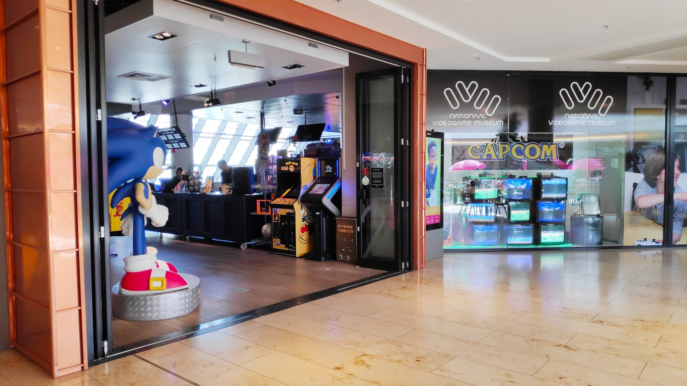

Het Nationaal Videogame Museum is 'the place to be' voor iedereen die meer wil weten (én beleven) over de geschiedenis, maatschappelijke en culturele kant van videogames. Het museum laat haar bezoekers ook de games van morgen ervaren. Gamers van jong tot oud zijn welkom om te spelen, ontdekken, leren en ervaringen online te delen.
Overzicht en wat is er te doen?

Zodra je binnenkomt in het museum,
word je overgoten door alles wat de game cultuur zo mooi en indrukwekkend maakt.
Volg onze tijdlijn door de sfeerkamers en ontdek de geschiedenis van videogames aan de hand van de gamechangers,
hoogtepunten en belangrijke momenten in techniek,
artwork en cultuur binnen de game industrie.
Speel klassiekers,
ontmoet iconen en ontdek de vergeten schatten van de videogames.
Het museum heeft rond 231 spelcomputers,
homecomputers en arcadekasten speelklaar staan,
en 327 unieke speelplekken.
Dat maakt ons het museum met de grootste arcade van heel Europa!


Openingstijden
Tijdslots
We werken met vaste tijdslots in het museum:
Ma: Gesloten
Di: Gesloten
Wo: 10.00-12.00 | 12.00-14.00 | 14.00-16.00 | 16.00-18.00 uur
Do: 10.00-12.00 | 12.00-14.00 | 14.00-16.00 | 16.00-18.00 uur
Vr: 10.00-12.00 | 12.00-14.00 | 14.00-16.00 | 16.00-18.00 | 18.00-21.00 uur
Za: 10.00-12.00 | 12.00-14.00 | 14.00-16.00 | 16.00-18.00 uur
Zo: 12.00-14.00 | 14.00-16.00 | 16.00-18.00 uur
In de schoolvakanties (regio Midden) zijn wij ook op maandag en dinsdag geopend.
Reviews
Hier komen drie reviews.
Minigame
Hier komen twee Minigames


Geschiedenis van het Museum
Een garagebox in Den Haag is de plek waar het avontuur in 2008 begon, met twee vrienden Hasan Tasdemir en Pascal Rappailles. De garagebox werd al snel te klein waarna ze uitweken naar een loods op een industrieterrein. Helaas was de loods niet verwarmd en moest midden in de winter alles worden overgebracht naar een leegstaand Ministerie van Landbouw. Toen ook dit pand leeggeruimd moest worden, werd de toenmalige collectie van 10 arcade videogames met wat reserveonderdelen opgeslagen in een oude showroom voor klassieke auto’s. Omdat daar geen ruimte was om de kasten te renoveren of te bespelen werd uitgekeken naar passende ruimte.
Die werd in 2011 gevonden aan de Cobaltstraat in Zoetermeer. Daar besloot Hasan om met 4 vrienden de locatie te huren en kon het avontuur groeien tot een eigen ontmoetingsplek om hun hobby uit te oefenen en lekker te ontspannen met een game.
Website gemaakt door: Merijn Florie en Amin Oulkadi